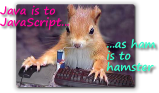

After looking at computer memory, the CPU, and a little computing history, we finally, (I hear some of you say), come to Java. Java is a sometimes controversial topic in the computing world; Sun Microsystems and Microsoft have exchanged lawsuits over Java, and Java figured prominently in the government's Microsoft antitrust trial. Earlier, Oracle (the new owner of Java) sued Google over their use of Java in the Android platform. (They lost.)
If you're like most people, you've probably asked yourself, "Why?"
Just What IS Java?
Let's start by taking a "high-level" look at Java. Part of the controversy surrounding Java occurs because different people mean different things when they talk about Java.
Let's start by asking:
- what we mean when we talk about "the Java platform"
- why Java is important in the wider computing world?
- why should Computer Science students learn Java?
Let's start by answering the question, "What is Java?"
Java is an often confused and misused term in the field of computing. Sun Microsystems, the developers of Java, hoping to alleviate some of this confusion, have provided a simple definition; according to Sun, Java is:
Certainly nothing controversial there! (I'm sure that all of you find Sun's explanation just as illuminating as I do :)!) Instead of walking through each of these "buzzwords", let's step back and take a look at what I call the three faces of Java.
The "Three Faces" of Java
A well-known Indian legend tells the story of seven blind men describing an elephant. The one who felt the trunk thought the elephant was like a snake, the one who felt the legs thought the elephant was like a tree, and so on.
Java is a little bit like that; you'll often hear:
- "Java is slow" or, while someone else will chime in, "No, no! For my programs, Java is even faster than C++"
- Many people will tell you that "Java programs look strange"
- Some will tell you that "Java is better for building Web applications than Microsoft .NET", while others will say the opposite
- You may hear, "Microsoft .NET supports Java along with other programming languages"
- Most often, though, you'll hear that, "Java is the cross-platform scripting language that works inside your Web browser"
Each of these statements (except for the last) contains a kernel of truth; each
also suffers from confusion between the three parts of the Java
platform. In reality, Java is:

-
an object-oriented programming language. The Java language,
like C++ or Smalltalk, can be supported on different runtime systems, like the
Sun Virtual Machine, or even on Microsoft's .NET.
- a cross-platform runtime system called the Java Virtual Machine or JVM. Modern JVMs almost all use a JIT or Just-In-Time compiler to convert Java's platform-neutral machine language (called bytecode) into native, high-performance machine code your specific hardware.
- a set of universally distributed classes called the Java Class Libraries. These extensive class libraries provide support for GUI programming, network and file I/O, Web applications and a host of other features. You can think of these as pre-built parts that you can use to build your own programs.
The combination of all three of these is called a Java platform. The most commonly used Java Platform (called the JRE) is supplied by Oracle, (now that Sun Microsystems has been purchased and absorbed), but there are also versions supplied by Apple, Microsoft, IBM, HP, and so on.
Java itself is open-source software so (theoretically) no one company can control it. You can find out more about open-source Java at http://openjdk.java.net/.
Since Oracle purchased Sun Microsystems, Oracle has been attempting to exert more control over the language, especially when it comes to the open-source community. Read Java Trap, 2010 Edition for more information and some useful links to other articles about Java and open source.
What about JavaScript?

JavaScript is often confused with Java, but the two are really not related at all. JavaScript is a programming language designed by Netscape, used to manipulate Web documents and Web browsers. JavaScript was originally named LiveWire, but was renamed by Netscape when Java became popular.JavaScript source code is downloaded to your Web browser, often embedded inside an HTML program, and the instructions are interpreted and executed by your Web browser. JavaScript and Java are two entirely different languages, used for entirely different purposes, (although both of them share a similar source-code syntax, borrowed from the C++ language). JavaScript is often used to control your Web browser and the contents of individual Web pages while Java is a general-purpose programming language.
As a side note, I should mention that the Rhino JavaScript interpreter from the Firefox Web browser is included as part the Java 6 class libraries, so it is possible to use JavaScript from inside your Java 6 (and later) programs. JavaScript is also incredibly useful to know if you want to work on Web applications, even if those Web apps are built with some other programming language.
So, if Java isn't the same as JavaScript, then what is Java used for? What kinds of programs are written in Java?
Types of Java Programs
There are four major types of Java programs: applets, applications, server-side programs, and mobile applications. Let's take a look at each of these, starting with Java applets.
Applets
Java applets are graphical Java programs that are "hosted" inside a Web page, like Mark Wesley's Goldfish applet pictured here. (Note that this is not the actual Java applet, since many of you will have the Java browser plugin disabled in your Web browser.) Here's how Java applets work:
- The compiled Java machine code (known as a .class file) for your program is stored on a Web server, much like an .gif or .jpg image file, or like a Flash animation file.
- The code is automatically downloaded to the viewer's machine when a user visits a Web page that contains a reference to the applet (called an applet tag).
- The user's Web browser starts running a Java Virtual Machine when it encounters a Java applet, and the JVM runs the applet inside the browser's JVM. This is similar to the way Flash/Shockwave animation, or other browser plug-ins, like QuickTime, are handled. The JVM browser plug-in is installed when you install the Java JRE (Java Runtime Environment). If you can see this applet, you already have a JRE installed, but if you don't, installing a JRE only takes a few minutes.
For safety sake, Java applets are run inside a restricted "sandbox", and are prohibited from performing actions that might damage your computer or compromise your privacy, if used maliciously. For instance, applets cannot read and write files on your local hard-drive; applets are also prevented from contacting other servers on the Internet to send your credit-card information to China or Nigeria.
Sometimes, you'll hear applets referred to as "client-side" Java. That's because all three parts of the computing process: input, output, and processing, occur on your local machine, even though the executable class files are stored on the Web server. In this class, you'll learn to create both applets, and the second kind of Java program, called an application.
Even though applets run inside a "sandbox", it's possible that bugs in the JVM may allow malicious programs to "break out". That happened on the Mac last year, when Apple failed to keep their JVM updated with the latest fixes. Apple then stopped producing new JVMs, and automatically disabled applets in the Safari Web browser.
In January 2013, the DHS recommended that all users disable Java in all Web browsers until the Java plugin produced by Oracle could be fixed. Finally, beginning with Java 7, Update 51, all unsigned Java applets were automatically blocked by the Oracle JVM.
While you will probably still visit a site that uses Java applets, for all intents and purposes, applets are a technology whose time has passed. In CS 170 we will use applets only on the client side, and only as a simple way to learn about Java's graphics libraries.
Applications
Java can also create applications, which are programs that are installed and run on the user's local machine, in the same way you would install and run a program written in Visual Basic or C++. There are two kinds of Java applications:
- Console-mode applications are the traditional "teletype-style"
programs similar to those you'd write in a Pascal or C++ class.
 Many of the programs you'll write in this class will be console applications.
Console programs are useful when you're learning to program because
they reduce the amount of detail that can "clutter up" what you're
trying to focus on. Console programs are also often used "in the
real world" for utility and server-based applications.
Many of the programs you'll write in this class will be console applications.
Console programs are useful when you're learning to program because
they reduce the amount of detail that can "clutter up" what you're
trying to focus on. Console programs are also often used "in the
real world" for utility and server-based applications.
- GUI (Graphical User Interface) applications. These programs use windows,
buttons, checkboxes and graphics to create the kind of interactive programs
you're used to in the Windows & Mac worlds. Here's a Currency Converter
Java application, running on the Mac:

The JRE actually comes with two different GUI libraries built-in: the original AWT (Abstract Window Toolkit), and the newer JFC (Java Foundation Classes—AKA Swing), which provide a set of more advanced components. In addition, to the built-in libraries, you can also add different GUI tool-kits and libraries. During a portion of the class, we'll be using a library of graphical shapes developed by the Association of Computing Machinery, in addition to a set of classes for manipulating sounds and images developed by Mark Guzdial and the Media Computation project at Georgia Tech.
Server-Side Java
A third kind of Java program is called a server-side application. These programs use an additional set of Java classes, in addition to the classes contained in the Java 2 Standard Edition (J2SE). Collectively, these additional classes are called the Java 2 Enterprise Edition or J2EE. J2EE does not replace standard Java, which you'll learn in this class, but adds new features to it.
Server-side applications are not downloaded or installed on the user's computer. Instead, the Java program runs on an Application Server, (such as BEA WebLogic, IBM WebSphere, or Apache's Tomcat), and only the input or output is sent to the user's machine, as regular HTML.
Server-side applications are most often accessed through a Web browser, and are used for ecommerce and other interactive Web sites. The Web-CAT program grader that we'll use to grade the programming portion of your exams and homework is a server-side Java program. Here's an image I put together from a sampling of some research done by Marty Hall on different Web sites that are primarily based on server-side Java. We won't do any server-side Java in this class. OCC's Java Programming 2 course, CS 272, includes server-side Java programming along with advanced GUI and database programming.
Mobile Java
You can also write Java programs that will run on Palm Pilots, cell phones, and other "low resource" devices. These programs use the same Java language, but an entirely different set of class libraries. The class libraries used for mobile devices are called the Java 2 Micro Edition or J2ME.
Other variations of the Java Platform, such as the one used in Google's Android phones and tablets, also use the same Java language, but even different class libraries and a different runtime environment.
Why is Java Important?
How is Java different from other programming languages you might use, like Visual Basic, Pascal, or C++? The biggest difference is the idea of cross-platform binary portability.
A portable language is one that is designed to run on different computer operating systems or different computer hardware. The C language is portable, for instance, because you can run the same program on both your Windows computer and your Macintosh, by taking your C-language source code and recompiling it with a different C compiler on each machine. JavaScript is also a portable language, because you can download the same program to a Mac user, a Windows user, or a Unix user, and the Web browser will interpret the source code, turning it into the correct machine code for the individual machine.
This is called source code portability, and it only works if:
- there is a compiler or interpreter available on each platform
- the program uses no platform-dependent facilities
C and C++ were designed to be portable. Languages like Visual Basic, AppleScript, or Intel assembly language, are non-portable languages.
WORE
Java programs are designed to offer more than source-code portability; Sun's goal for the Java Platform is summed up in the "Pure Java" motto called WORE, or:
With WORE, you should be able to compile your Java program on a Mac and then run it, with no changes at all, on a Windows or Unix computer. This is possible because the JVM installed on each platform understands the same bytecode, and because every Java platform has the same classes available.
This might not seem like a big deal to you, but it means that businesses can develop their programs on inexpensive Windows and Mac computers, and then deploy them on very expensive servers and mainframes, all without making any changes. WORE means that software is no longer "locked into" the hardware platform it was developed on.
Problems with WORE
The major problem with Java is that WORE really isn't perfect; each implementation of the Java platform has subtle differences, and so developers often end up with:
There are several reasons for this:
- There are several different versions of the Java platform. New versions of Java are backwards compatible, (that is, you can run your old Java programs with a newer version of Java), but you can't run programs written using the latest features on older versions of the JVM. So, if users don't have a version of Java at least as recent as the version you've used for your program, they won't be able to run it. (That's why you need to have Java 5 or 6 installed for this class.)
- GUI performance depends on native peers. In other words,
Buttonobjects on the Mac act differently fromButtonobjects on Windows or Unix. - Vendors of expensive Java application servers, like Oracle (BEA) and IBM (Websphere), add extra features to their app servers, (known as "vendor lock-in"), which makes it difficult to move a potentially portable Java server-side application to a competitor's environment.
In addition to the WORE failings, Java speed is still an issue. Java GUI apps use more memory and often perform more slowly than equivalent C++ programs. For this reason, the most really high-performance GUI apps (such as Photoshop or some video games) are still written in C or C++ or even in assembly language. For general use, server-side applications, and mobile apps, though, Java is certainly "fast enough".
Why CS Students Should Learn Java
If Java programs are less capable than C++ programs, and they run slower, then why not just learn C++ to start with, instead of messing with Java? There are several reasons:
- First, Java is a more modern, object- oriented language. One of the major goals of CS education is to teach you to use abstraction. Abstraction is the ability to mentally "strip away" the non-essential details in a problem, and concentrate on the core elements to craft your solution, and Java lets you work at a higher level of abstraction than C or C++, or even C#. While there are still a lot of details you have to get exactly right, compared to C++ the amount of extraneous minutia has been considerably reduced.
- Java is used extensively in Computer Science classes at Universities across the country, not only for the introductory programming classes (like this one) but for your upper-division coursework as well. If you plan on transferring, your life will be a lot easier if you know Java well. Currently, many of the top Universities, including Berkeley and UCI, are in the process of switching from Java to Python as the introductory language. To get a quick heads-up on Python, you can take our CS 131 class, or any of one of the free MOOCs available from Udacity, Coursera or Edx. I especially recommend the free CS 101 class at Udacity.com.
- Another nice bonus for CS students is that you can easily write graphical applications. By contrast, writing graphical applications in C++ is much more complex, much too complex for an introductory programming class. Writing the "Hello World" application for Microsoft Windows in C++, for instance, takes a full page of code and involves pointers, structures static variables and callbacks. As a bonus, with Java you can do your work on the Mac, Linux or Windows; the choice is yours.
- Finally, the tools that we'll use in this course are ideal for teaching programming. The tools you'll use are simple, open source, cross-platform and completely free (which I'm sure you'll agree is important).
Which Version of Java?
There are several different versions of Java. Unfortunately, the version numbering scheme used is a little strange, and the terminology has changed over the years. Mostly, you'll be concerned with is the major, or Java platform version. The platform version tells you what classes and methods are available when you write your Java programs and applets. There are seven of these:
- Java 1.0 and Java 1.1 are of mostly historical interest. Introduced in 1995 and 1996 these early versions of Java more than 5,000 methods in about 500 classes. With these early versions of Java, each browser developer created their own JVM. There was a Netscape JVM, a Microsoft JVM and so on, which created a lot of compatibility problems.
- Java 1.2, 1.3 and 1.4: represent a complete re-write of Java, and these versions were named the Java 2 Platform. With the introduction of Java 2, Web browsers used the Java Runtime plug-in, instead of creating their own versions of Java. The Java 1.4 platform had about 3,000 different classes with about 30,000 methods, so they were much larger than the earlier versions.
- Java 5, 6, 7 and 8 are the most recent major versions of Java. Java 5 added support for generic collection classes as well as for iterators, like the Scanner class for processing input. In this class, you can use Java 7 or Java 8. You cannot use any of the earlier versions of Java. In the OCC Computing Center we are using Java 7, not Java 8.
SDK, JDK, JRE and IDE
Traditionally, the JDK or Java Development Kit (also sometimes called the SDK), is the software from Sun Microsystems used to write Java programs, while the JRE or Java Runtime Environment is the software used to run Java programs. The JDK includes a command-line compiler, a debugger and other useful tools, such as the Java Archive utility. (The JDK doesn't include a text editor for creating your source code, however.)
For the class this semester, you do not need the JDK (although you can download it and install it if you like.) Instead, we'll be using an IDE, or Integrated Development Environment, named DrJava. While many IDEs, such as the popular BlueJ require you to download the JDK as well, both Eclipse and DrJava will work with only the JRE or Java Runtime installed. (Although with the JRE, you can't use the DrJava debugger.)
You will, however, need the latest JRE for your platform. Just point your Web browser to
http://www.java.com,
click download, and then just follow the instructions. It will take you about
15 minutes to download and install the software.

What About Java Summary
- The Java platform consists of a programming language, a set of common class libraries, and a runtime execution environment called the Java Virtual Machine or JVM.
- Java and Javascript are different languages, used for different purposes.
- Java applets are programs that run inside the context of a Web browser, usually downloaded from the Web. Applets run inside a "sandbox" that limits harmful side effects.
- Java applications run on your local computer, using its JVM. Console applications use text input and output, while graphical (GUI) applications use windows, buttons and other interactor widgets.
- Server-side Java programs process data on a remote server and use your computer's Web browser for input and output. Programs like Blackboard and MyOCC are examples of server-side Java programs.
- Micro-Java programs run on mobile phones and PDAs. The mobile Java platform, so creating applications is not as easy as creating desktop Java programs. Other platforms, notably Android, use the Java language, but different libraries and runtime systems.
- Java's major feature is that it supports binary portablility; programs compiled on one platform, like Windows, should run, unchanged on any platform, such as the Mac or Linux. This is called WORE, or write once, run everywhere.
- Learning Java is important for CS students, because it is one of the major teaching languages used when you transfer.
- To run Java programs, your computer needs a Java Runtime Environment. There have been many different versions since 1995. We will be using Java 7 or 8.